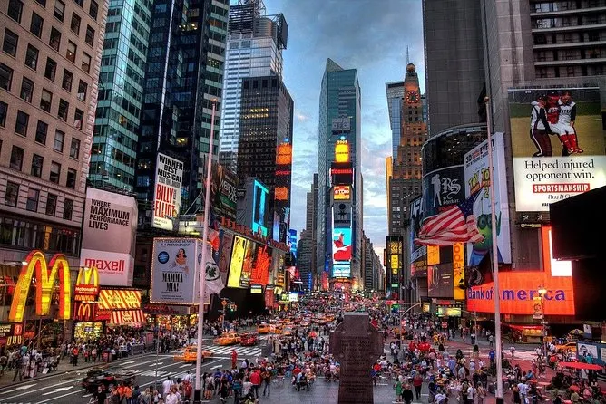

Informações
Conheça alguns dos bairros e locais emblemáticos de New York.

| Bairros e locais de referência | ||
|---|---|---|
| Bairro | Zona | Local de referência |
| Manhattan | Midtown | Times Square |
| Lower Manhattan | One World Trade Center | |
| Brooklyn | East River | Ponte de Brooklyn |
| Queens | Flushing Meadows | USTA Billie Jean King National Tennis Center |
Curiosidades sobre New York
- New York é formada por cinco bairros: Manhattan, Brooklyn, Queens, Bronx e Staten Island.
- O Central Park fica em Manhattan.
- A Estátua da Liberdade encontra-se na Liberty Island.
- A Ponte de Brooklyn liga Brooklyn a Manhattan.
- A Grand Central Terminal é uma estação ferroviária em Midtown Manhattan.